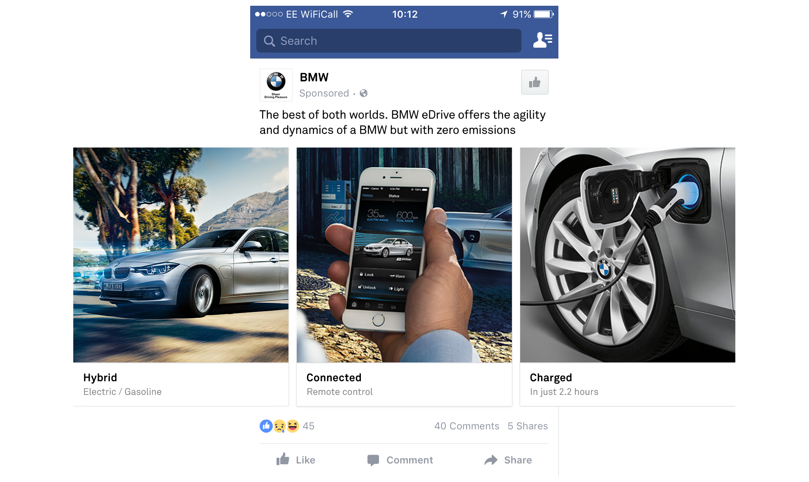
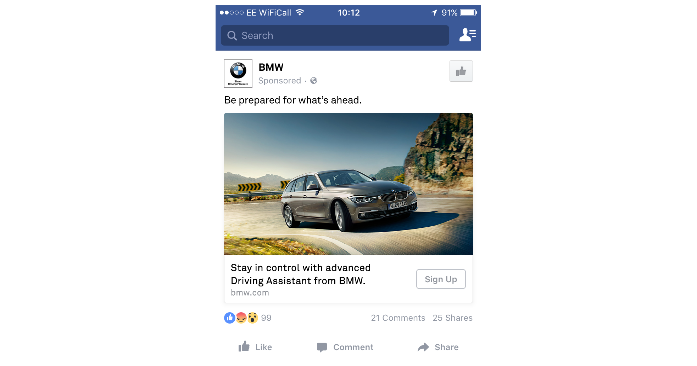
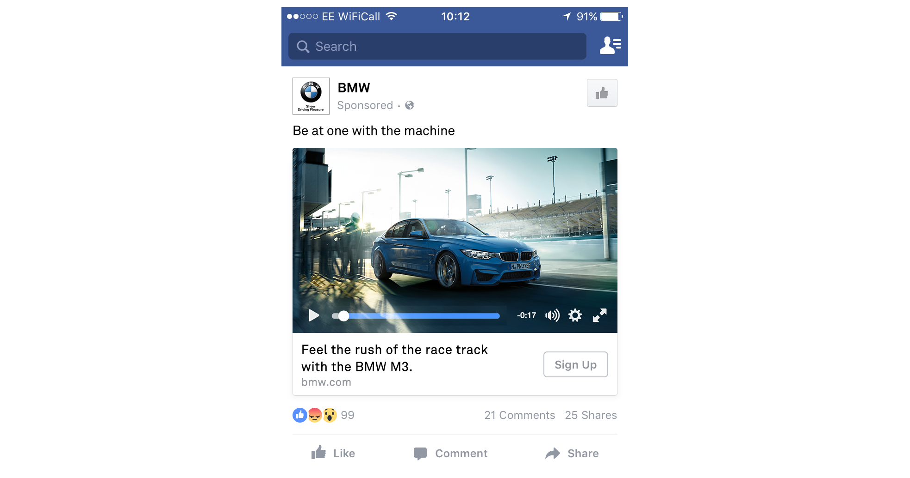

Art Direction for BMW demonstrating a campaign technique where creative is targeted not only by demographics but also psychographics. Depending on the algorithm’s prediction of your personality (based on the OCEAN personality model) a tailored advert is served which aims to resonate more effectively than a generic one would.
Campaign creative for Conscientious group
The ad above would be served for people scoring highly for Conscientiousness. This personality group responds best to ads which provide lots of information and detail. They are more likely to be concerned for the environment and saving money than other personality types so the hybrid car would probably tick the most boxes for them.
Campaign creative for Neurotic group
Highly neurotic people often worry about what might go wrong. BMW’s Driving Assistant helps the car stay in control at all times so is likely to be of particular interest to this personality group.
Campaign creative for Extraverted group
Finally, people scoring highly in Extraversion are most likely to enjoy the thrill of driving a sports car and the social validation that can accompany ownership. The ad above for this group would feature engaging, emotive video content which alludes to this.